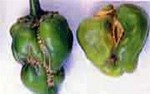
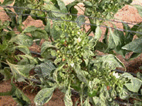
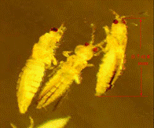

| Home |
| PEST OF CHILLIES |
MAJOR PESTS |
| 1. Chillies thrips |
| 2. Muranai mite/ Broad mite/ yellow mite |
| 3. Tobacco caterpillar |
| 4. Fruit borer |
MINOR PESTS |
| 1. Stem borer |
| 2. Cut worm |
| 3. Green peach aphid |
| Questions |
| Download Notes |
CHILLIES :: MAJOR PEST :: CHILLIES THRIPS
1. Chillies thrips: Scirtothrips dorsalis (Thripidae: Thysanoptera)
Host range
Tea, grapes, castor, cotton, Prosopis, Nymphaea pubescens
Damage symptoms
Leaves become crinkled, curled upward and shed. Buds become brittle and drop down. Plants get stunted and bronzed. Nymphs and adults are tiny, slender, fragile and yellowish straw in colour.
|  |  |
Bionomics
Insect reproduces sexually as well as parthenognetically. Female thrips insert the eggs into the veins and a female lays upto 40-48 eggs. Lifecycle occupies 10-20 days.
|  |
Management
- Grow resistant varieties like G5, K2, X 235
- Inter crop with a green manure crop Sesbania grandiflora (agathi) to provide shade which regulate the thrips population
- Do not grow chilli after sorghum – more susceptible to thrips
- Do not follow chilli and onion mixed crop as both the crops are attacked by thrips
- Sprinkle water over the seedlings to check the multiplication of thrips carbofuran 3G @ 200g/ 40 m2 area in the nursery
- Dip the roots of seedlings in monocrotphos 36 WSC @ 0.05% for 20 min. before transplanting
- Dust carbaryl 5 D 25 kg /ha in the early morning
- Spray any of the following insecticides with water 500 L/ha
|
|
|
|
|
|
|
|
|
|
Dimethoate 30 EC 500 ml |
Methyl demeton 25 EC 500 ml |
- Encourage the activity of predaceous thrips: Scolothrips indicus and Franklinothrips megalops in the field